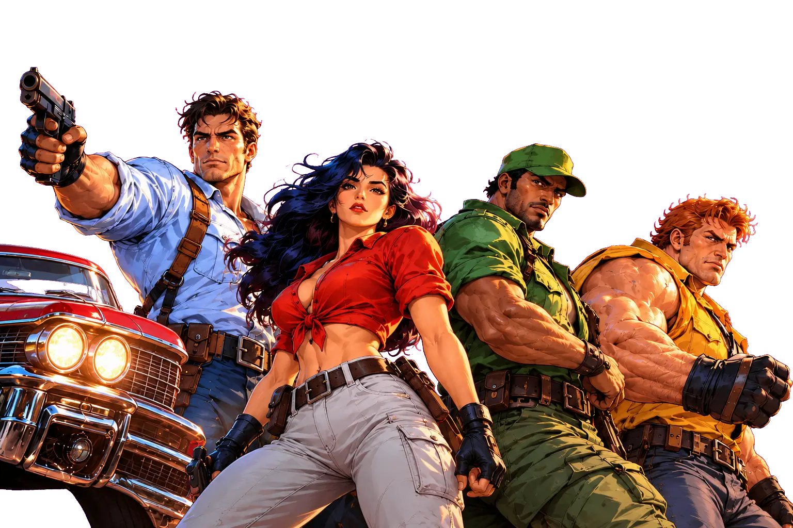

Cadillacs&DinosaursII The Crown Tide

Classic heroes. A wilder world. A new adventure.
Cadillacs & Dinosaurs II: The Crown Tide brings the 1993 arcade legend back to life with eight new stages, new threats and an untamed world, free in your browser.
- Browser
- Phone
- Gamepad
- Co-op for 3
01